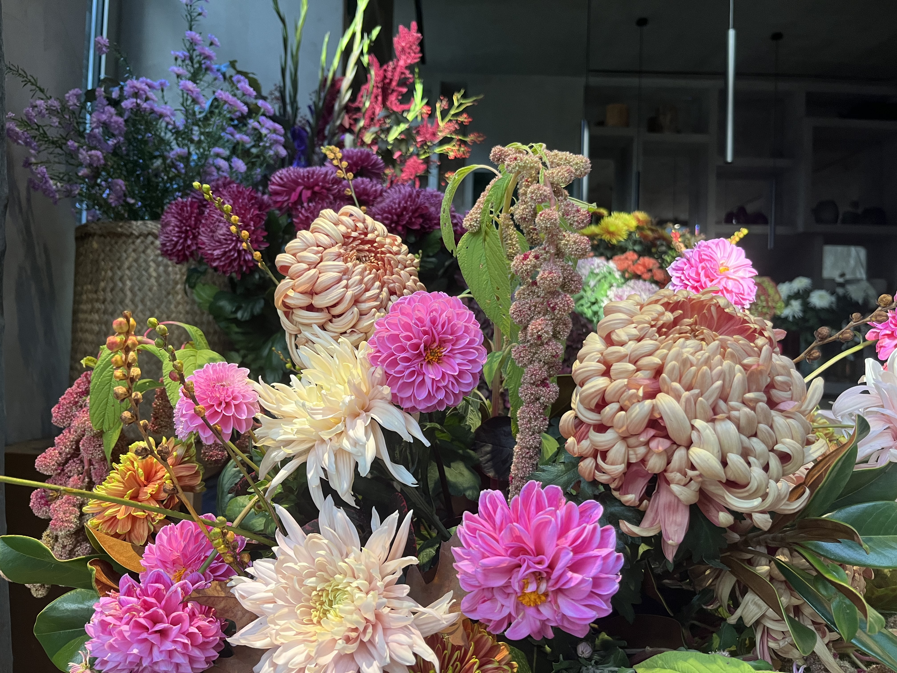
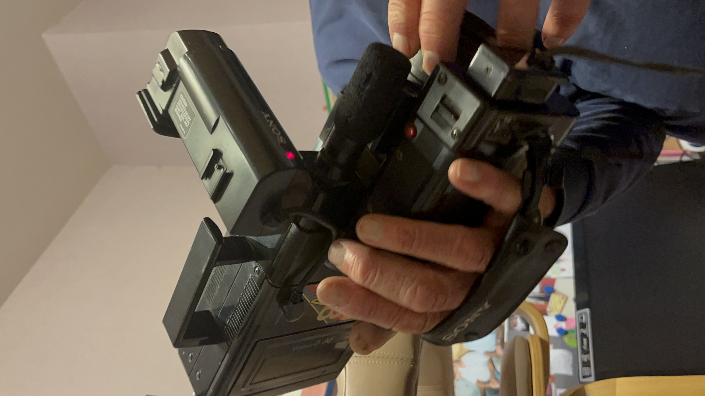
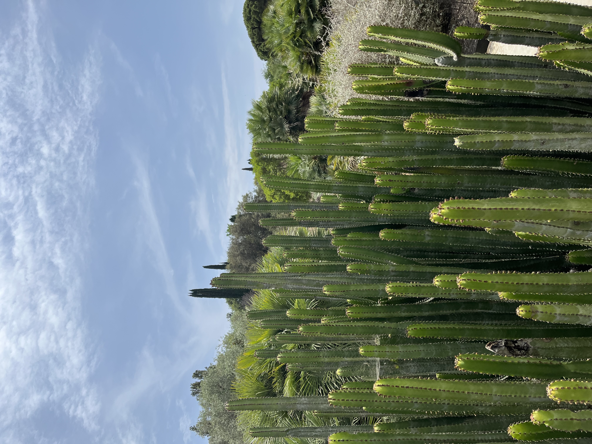
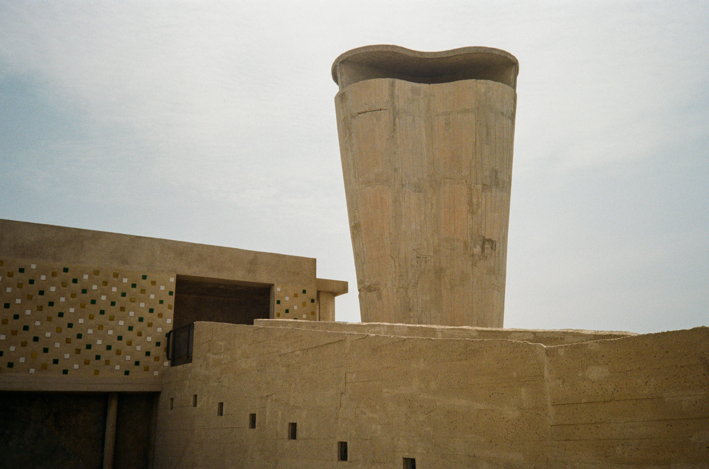
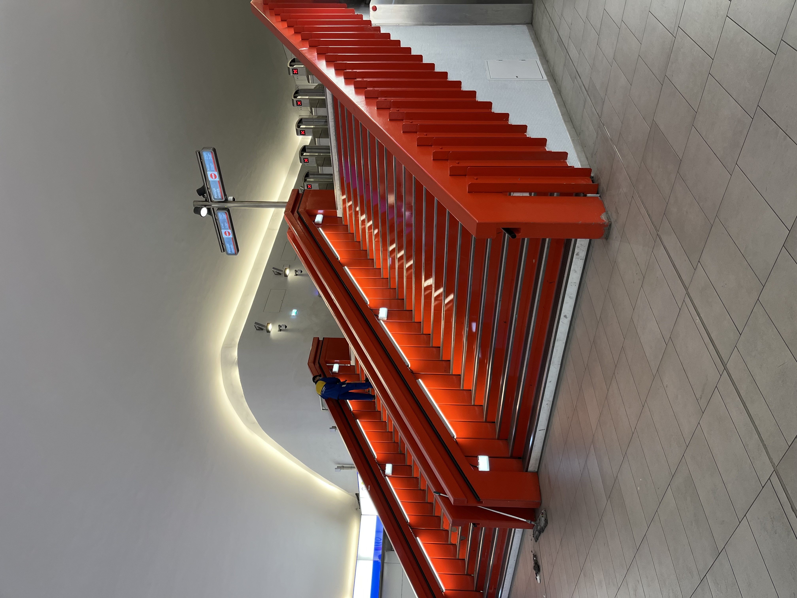
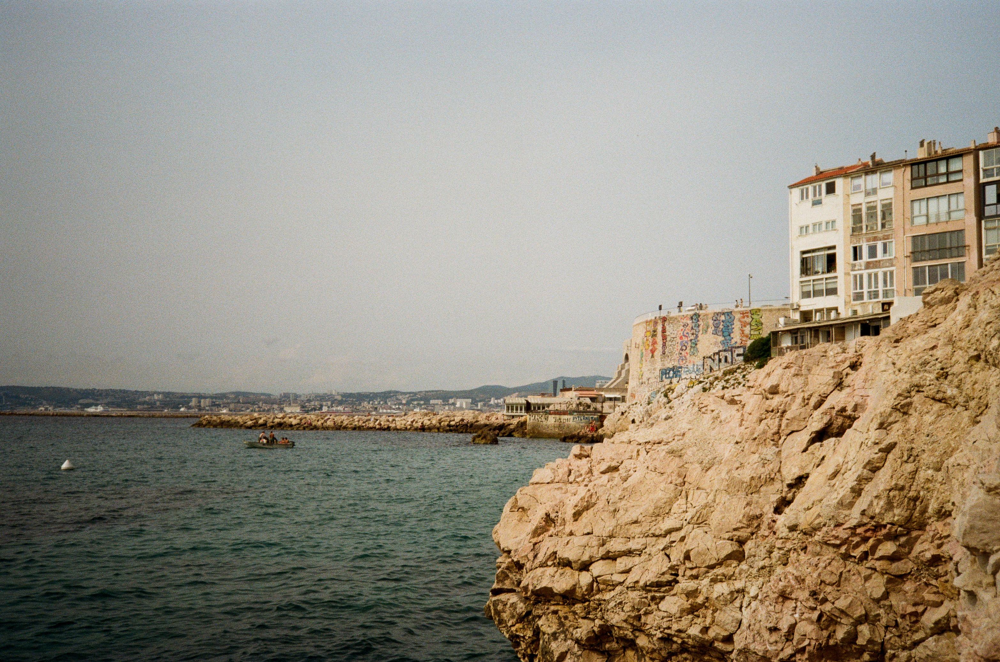
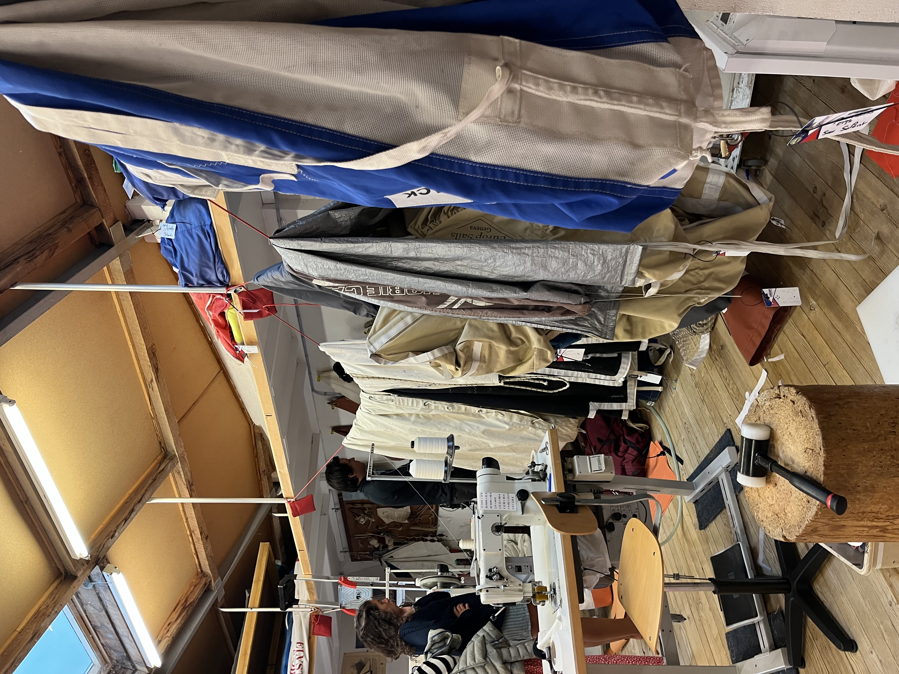
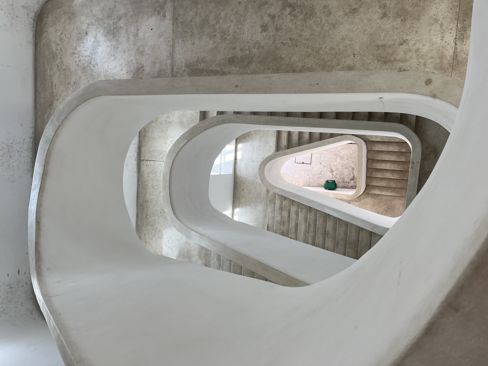
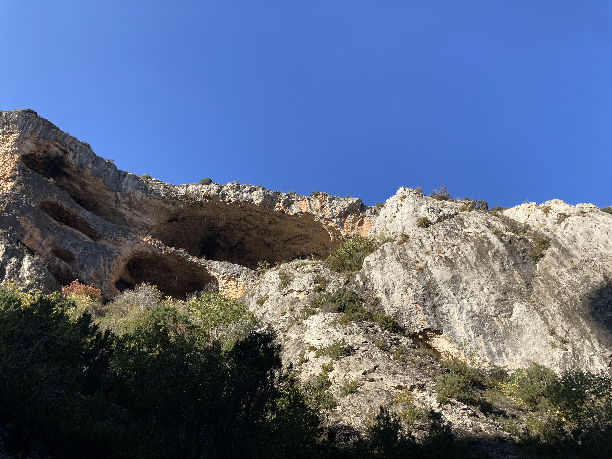

Galerie photos
Cette galerie rassemble des images qui comptent pour moi et qui nourrissent mon travail de design. Je travaille principalement en argentique, pour sa matière et sa lumière, mais je prends aussi des photos, avec un appareil numérique ou mon téléphone. Vous y trouverez ce qui m’inspire : balades, voyages, moments spontanés. C’est un espace qui reflète mon regard et ma sensibilité, et qui permet de mieux comprendre ma démarche de designer.












